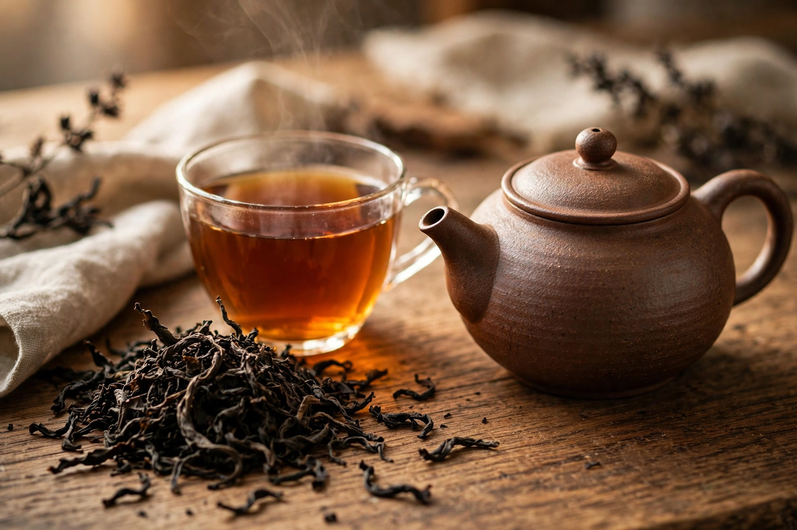

From Wikipedia, the free encyclopedia
| Black tea | |
|---|---|
 Brewed black tea and dried leaves | |
| Type | Tea |
| Origin | China (Fujian) |
| Colour | Red-amber infusion; dark leaves |
| Main process | Full oxidation |
Black tea is a type of tea that is more oxidised than oolong, yellow, white, and green teas, and is generally stronger in flavour. It is made from the leaves of Camellia sinensis, which are withered, rolled, fully oxidised (a process sometimes called "fermentation"), and fired. In Chinese and other East Asian languages it is known as "red tea" (hóngchá), after the colour of the infusion, while the Western name refers to the colour of the dried leaves.
Black tea originated in Fujian, China, in the mid-17th century; lapsang souchong from the Wuyi Mountains is often cited as the earliest example. Dutch and British traders carried black tea to Europe, where it overtook green tea in popularity. British demand drove large-scale cultivation in Assam and Darjeeling in India and in Ceylon (Sri Lanka), and black tea became the foundation of blends such as English breakfast and Earl Grey, and of the British afternoon-tea culture.
Two principal manufacturing methods are used: the traditional "orthodox" method, with careful rolling of whole or broken leaves, and the CTC (crush, tear, curl) method, which macerates leaves into small particles that brew quickly and are used in most tea bags. Major producing regions include Assam, Darjeeling, Nilgiri, Ceylon, Kenya, Yunnan, and Fujian.
Black tea contains caffeine (roughly 40–70 mg per cup), polyphenols including theaflavins and thearubigins formed during oxidation, and the amino acid L-theanine. It is the most consumed tea style in the Western world and in South Asia, where it is often boiled with milk and spices as masala chai.